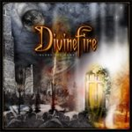

|
|
||
DivineFire : Glory thy Name (2005) |
|

http://www.divinefire.net |
1. From Death To Life 1:47 |
8.4/10 |
|
Glory thy name es el título del primer álbum del grupo sueco DivineFire, creado por el guitarrista, teclista y batería Jani Stefanovic y el cantante de Narnia Christian Rivel. Este álbum se editó primero en Japón en 2004, con bastante éxito, y salió en Europa en julio de 2005. La temática de las letras es de orientación cristiana, igual que por ejemplo las del grupo francés Heavenly, y el estilo se puede resumir como power metal pomposo y bastante cañero. Los sonidos orquestales y la intro narrada en "From death to life" auguran pompa y boato para el resto del disco, pero pronto "World's on fire" demuestra que van a ir conveniente acompañados de un imparable doble bombo y de una contundente base guitarrera sobre la que se deslizan riffs de sintetizador con cierto aire retro, algunas voces guturales y un melodioso estribillo. El doble bombo permanece como hilo conductor de "Never surrender", otro buen tema con argumentos parecidos al anterior, los teclados creando variaciones sobre la sólida base de las guitarras, coros melódicos, capas de voces superpuestas, pasajes más lentos y un estribillo con gancho. Otra espectacular acometida sinfónica para "The sign", que mantiene la implacable batería y los riffs de teclados como elementos comunes, junto a otro fantástico estribillo con impresionantes coros. En el quinto corte, "Out of the darkness", disminuye un poco el protagonismo de la batería, que deja más sitio a la base rítmica de guitarra y teclados, a la voz de Christian y a un larguísimo y llamativo solo de guitarra. "Pay it forward" es una balada, donde los teclados tienen gran protagonismo, sin desmerecer a las guitarras, y que se podría calificar como correcta, con un estribillo bastante emocionante y el resto un poco soso. Otra vez el doble bombo se erige protagonista de un tema, en este caso "Live my life for you", que muestra un perfecto engarce entre la voz Christian y los coros de acompañamiento. "The spirit" es una canción épica, con cuatro voces diferentes, aterradores gruñidos, batería atronadora, coros, teclados con cierta influencia oriental y diversas partes lentas pero a la que le faltan algunas partes más pegadizas. Termina el álbum "The way to eternity", una outro al uso más tranquila que la intro. Un muy buen primer disco, donde el doble bombo deja pocos respiros, aunque los deja, y los teclados se alzan como coloreadores de melodías, pero no como protagonistas. La voz de Christian Rivel encaja muy bien en el estilo del grupo, y la batería y los ocasionales gruñidos se encargan de subir el grado de dureza de este álbum. La segunda parte es un poco más floja que la primera pero aún así el conjunto es de nota alta. |
||
- Crítica escrita por Rubén Béjar - |
||